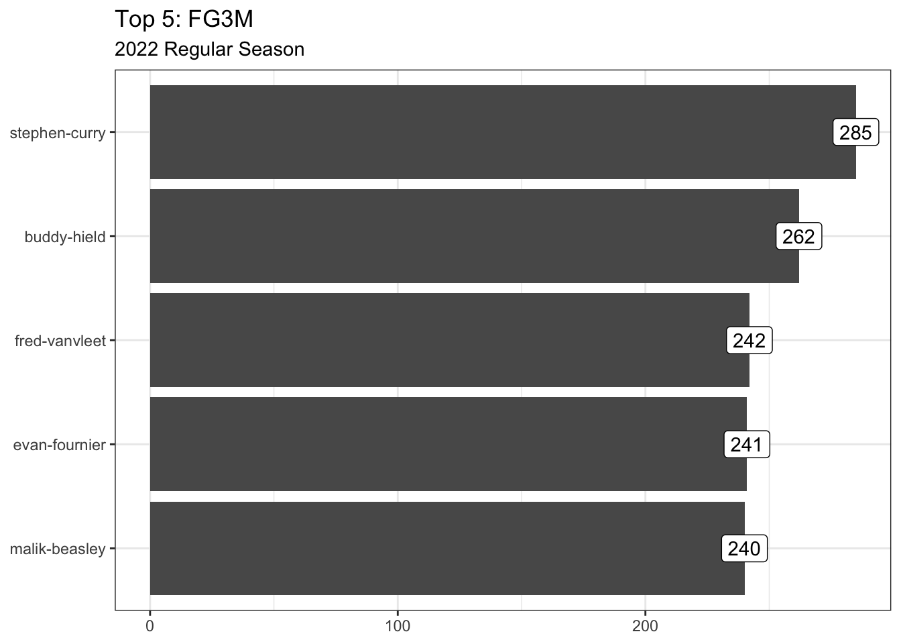
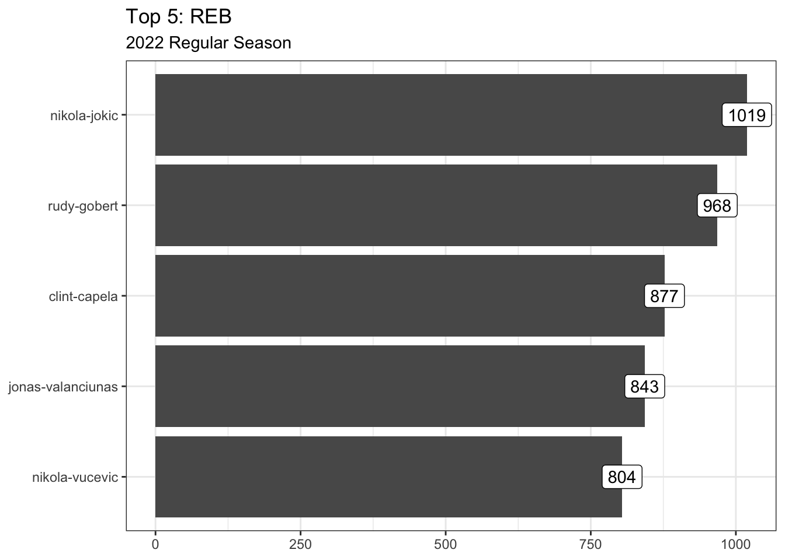
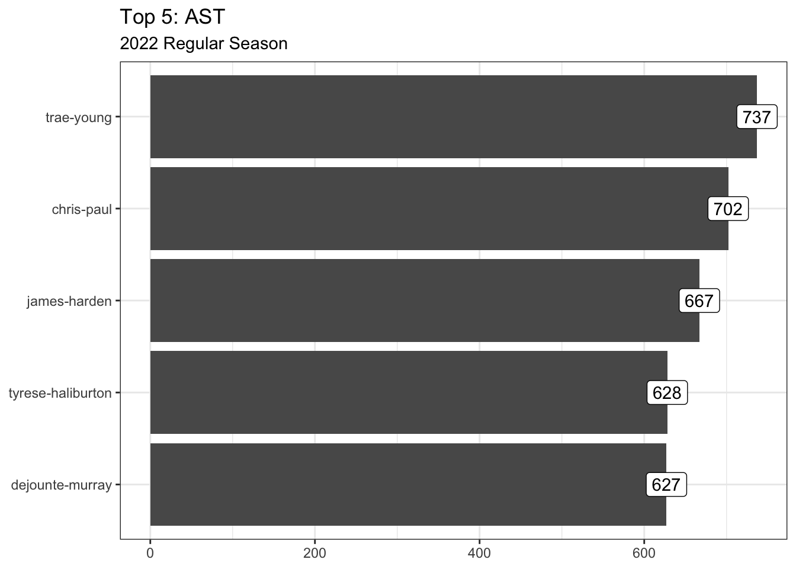
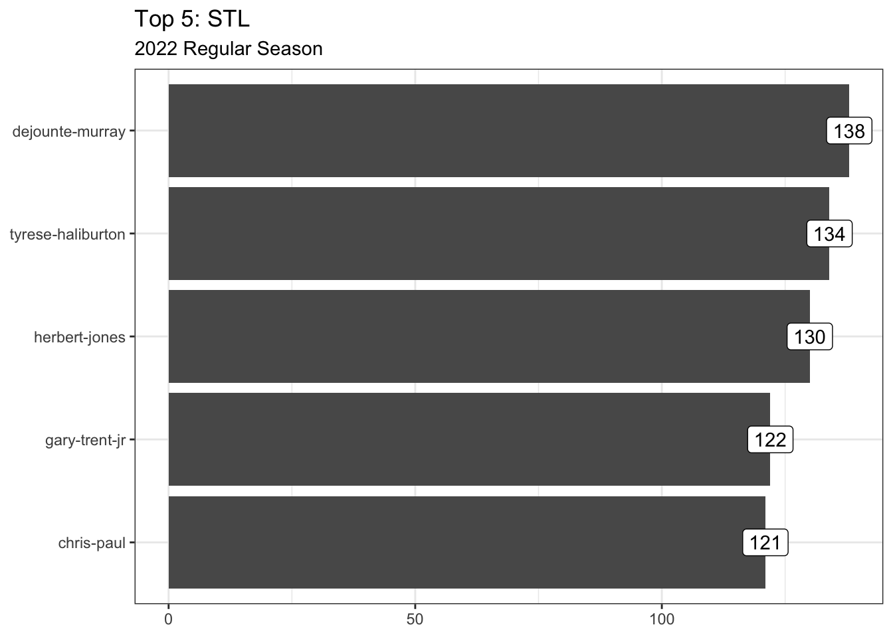
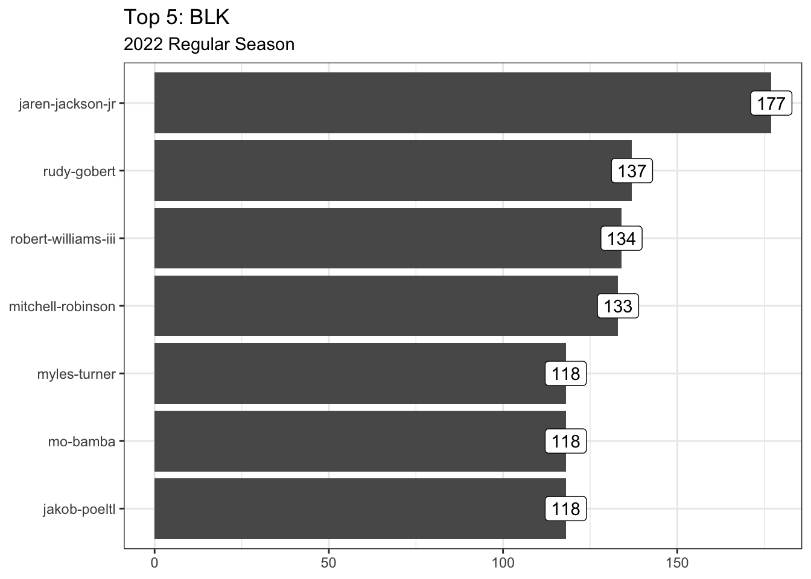
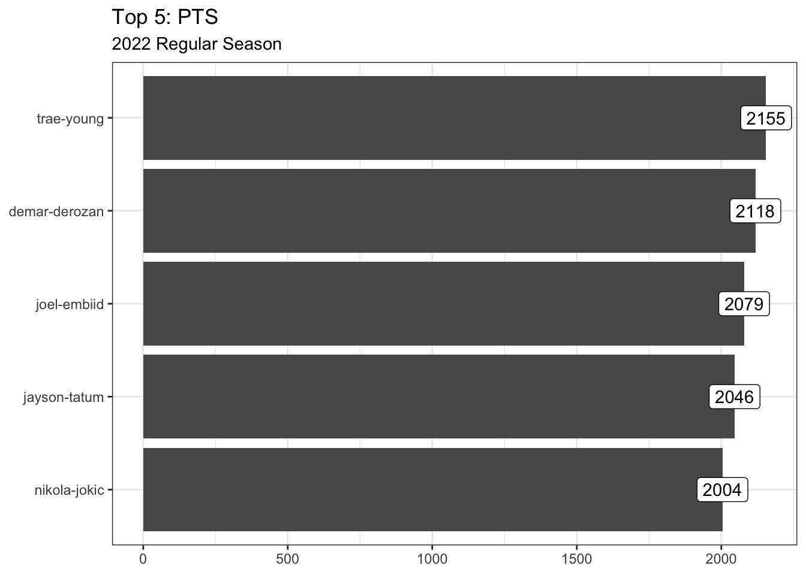

My first ever blog post for fantasy basketball.
It will be a quick and easy post showing the top-5 players, for the 2022-season, of the following statistics:
- TOV
- FG3M
- REB
- AST
- STL
- BLK
- PTS
- FG_PCT
- FT_PCT
Percentage & turnover stats are removed from the folloing plots.






So how many times does a player appear within a top-5 category?
Code
p <- list()
iwalk(l, ~ {
p[[.y]] <<- select(.x, player_slug)
})
p <- bind_rows(p, .id = "stat") |>
group_by(player_slug) |>
summarise(count = n(), stats = paste(stat, collapse = ", ")) |>
ggplot(aes(y = fct_reorder(player_slug, count), x = count, text = stats)) +
geom_segment(aes(x = 0, xend = count, yend = player_slug)) +
geom_point() +
labs(title = "Top-5 Stat Count", x = NULL, y = NULL) +
theme_bw()
ggplotly(p, tooltip = "stats") |>
layout(title = list(text = paste0(
"Top-5 Stat Count" # title
, "<br>"
, "<sup>"
, "Player appearance count in top-5 categories" # subtitle
,"</sup>"
))) |>
config(displayModeBar = FALSE)